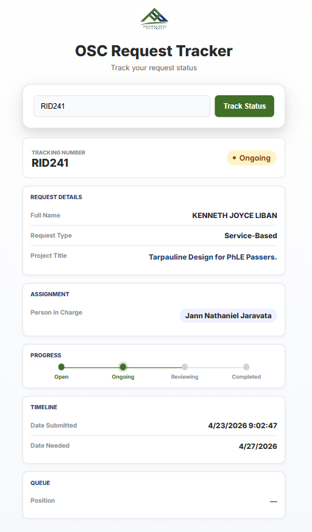

A web-based request tracking system that provides real-time status updates, queue visibility, and progress tracking.
A lightweight web app connected to Google Sheets that allows users to track requests in real-time using a tracking number.
Preview of the OSC Request Tracker interface with status timeline, queue position, and grouped request details.

The interface uses section-based cards to group related data such as Request Details, Assignment, Timeline, and Queue.
Input Tracking → Fetch Data → Display Structured Result
Requests are filtered by OPEN status and sorted chronologically to determine queue position dynamically.
A timeline replaces text-heavy statuses for faster understanding.